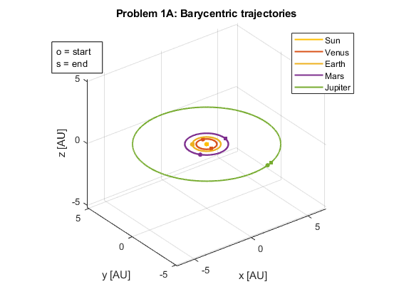
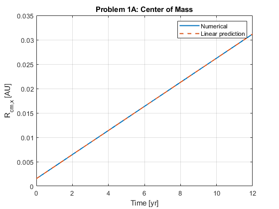
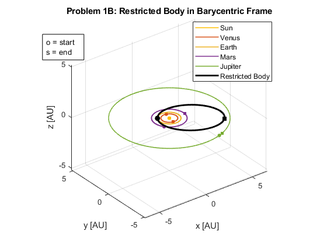
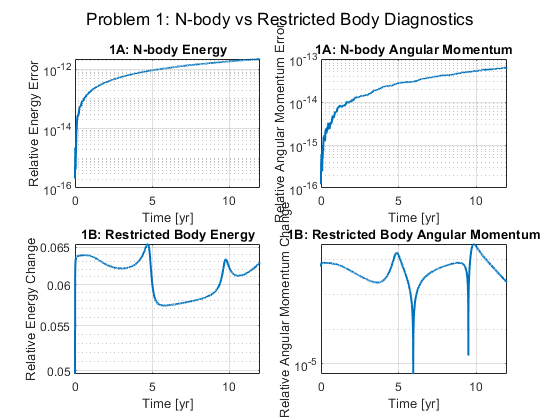
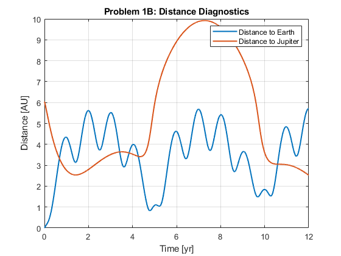
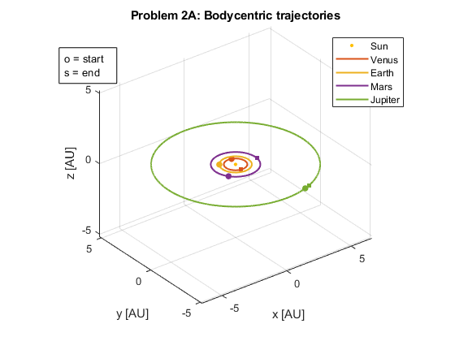
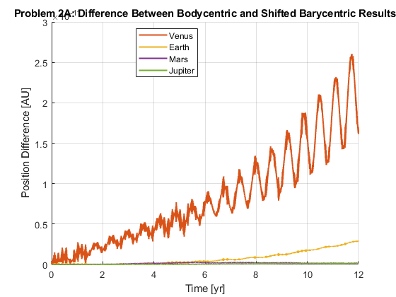
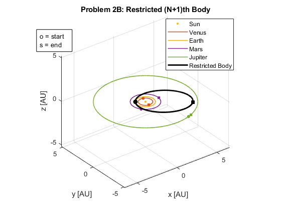
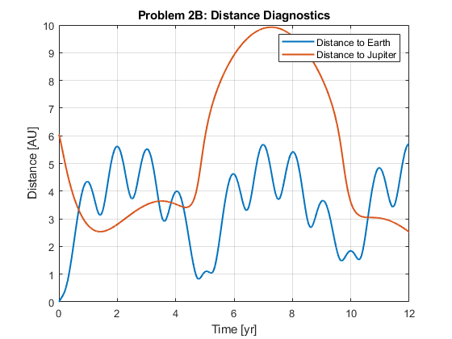

Contents
- MAE 240 HW — Problems 1 and 2
- Constants
- Bodies
- Colors
- Initial conditions
- Time
- PROBLEM 1A — BARYCENTRIC N-BODY
- Plot Problem 1A
- Problem 1A — Barycenter
- Problem 1A — Energy and Angular Momentum
- PROBLEM 1B — RESTRICTED BODY IN BARYCENTRIC FRAME
- Plot Problem 1B
- Problem 1B — Energy and angular momentum diagnostics
- Problem 1 — Combined Energy and Angular Momentum Diagnostics
- Problem 1B — Distance diagnostics
- PROBLEM 2A — BODYCENTRIC N-BODY
- Convert barycentric solution to Sun-centered form
- Plot Problem 2A
- Problem 2A — Integration accuracy comparison error
- PROBLEM 2B — RESTRICTED BODY IN BODYCENTRIC FRAME
- Plot Problem 2B
- Problem 2B — Distance diagnostics
- FUNCTIONS
MAE 240 HW — Problems 1 and 2
Problem 1: Barycentric N-body problem Problem 2: Bodycentric N-body problem + restricted (N+1)th body
clear; close all; clc;
Constants
G = 6.67430e-20; % km^3 kg^-1 s^-2 M_sun = 1.989e30; % kg AU = 1.496e8; % km yr = 365.25*24*3600; % s
Bodies
n = 5;
body_names = {'Sun','Venus','Earth','Mars','Jupiter'};
m_bodies = [
M_sun
4.867e24
5.972e24
6.417e23
1.898e27
];
r_AU = [0; 0.723; 1.000; 1.524; 5.203];
Colors
colors = lines(n); sunColor = [1.0 0.75 0.0]; colors(1,:) = sunColor; sunMarkerSize = 2.5;
Initial conditions
r0_all = zeros(3*n,1); v0_all = zeros(3*n,1); theta0 = linspace(0,2*pi,n+1); theta0 = theta0(1:n); % Sun r0_all(1:3) = [0;0;0]; v0_all(1:3) = [0;0;0]; % Planets for i = 2:n r_mag = r_AU(i)*AU; theta = theta0(i); r0_all(3*i-2:3*i) = [ r_mag*cos(theta) r_mag*sin(theta) 0 ]; v_c = sqrt(G*M_sun/r_mag); v0_all(3*i-2:3*i) = [ -v_c*sin(theta) v_c*cos(theta) 0 ]; end x0_bary = [r0_all; v0_all];
Time
T_end = 12*yr; tspan = linspace(0,T_end,5000); opts = odeset('RelTol',1e-11,'AbsTol',1e-13);
PROBLEM 1A — BARYCENTRIC N-BODY
[T_bary,X_bary] = ode45(@(t,x) eom_NBP_bary(t,x,m_bodies,G), ...
tspan,x0_bary,opts);
r_bary = X_bary(:,1:3*n);
v_bary = X_bary(:,3*n+1:end);
Plot Problem 1A
figure('Color','w','Name','Problem 1A — Barycentric'); hold on; grid on; axis equal; for i = 1:n ri = r_bary(:,3*i-2:3*i); plot3(ri(:,1)/AU,ri(:,2)/AU,ri(:,3)/AU, ... 'LineWidth',1.5, ... 'Color',colors(i,:), ... 'DisplayName',body_names{i}); plot3(ri(1,1)/AU,ri(1,2)/AU,ri(1,3)/AU,'o', ... 'MarkerSize',4, ... 'Color',colors(i,:), ... 'MarkerFaceColor',colors(i,:), ... 'HandleVisibility','off'); plot3(ri(end,1)/AU,ri(end,2)/AU,ri(end,3)/AU,'s', ... 'MarkerSize',4, ... 'Color',colors(i,:), ... 'MarkerFaceColor',colors(i,:), ... 'HandleVisibility','off'); end xlabel('x [AU]'); ylabel('y [AU]'); zlabel('z [AU]'); title('Problem 1A: Barycentric trajectories'); legend('Location','best'); view(3); annotation('textbox',[0.13 0.78 0.18 0.08], ... 'String',{'o = start','s = end'}, ... 'FitBoxToText','on', ... 'BackgroundColor','w');

Problem 1A — Barycenter
r_cm = centerOfMassHistory(r_bary,m_bodies); P = linearMomentumHistory(v_bary,m_bodies); V_cm0 = P(1,:)/sum(m_bodies); r_cm_linear = r_cm(1,:) + T_bary(:)*V_cm0; figure('Color','w','Name','Problem 1A — Center of Mass'); plot(T_bary/yr,r_cm(:,1)/AU,'LineWidth',1.5); hold on; plot(T_bary/yr,r_cm_linear(:,1)/AU,'--','LineWidth',1.5); grid on; xlabel('Time [yr]'); ylabel('R_{cm,x} [AU]'); legend('Numerical','Linear prediction'); title('Problem 1A: Center of Mass');

Problem 1A — Energy and Angular Momentum
[~,~,E] = totalEnergyHistory(r_bary,v_bary,m_bodies,G); relE = abs(E-E(1))/abs(E(1)); H_bary = angularMomentumHistory(r_bary,v_bary,m_bodies); relH_bary = vecnorm(H_bary-H_bary(1,:),2,2)/norm(H_bary(1,:));
PROBLEM 1B — RESTRICTED BODY IN BARYCENTRIC FRAME
iEarth = 3;
iJupiter = 5;
r0_earth_bary = r_bary(1,3*iEarth-2:3*iEarth).';
v0_earth_bary = v_bary(1,3*iEarth-2:3*iEarth).';
r0_jup_bary = r_bary(1,3*iJupiter-2:3*iJupiter).';
u_r = r0_earth_bary/norm(r0_earth_bary);
u_t = v0_earth_bary/norm(v0_earth_bary);
offset = 1e-3*AU;
r0_sc_bary = r0_earth_bary + offset*u_r;
a_trans = 0.5*(norm(r0_sc_bary) + norm(r0_jup_bary));
v_dep = sqrt(G*M_sun*(2/norm(r0_sc_bary) - 1/a_trans));
v0_sc_bary = v_dep*u_t;
x0_sc_bary = [r0_sc_bary; v0_sc_bary];
r_interp_bary = makeInterpolants(T_bary,r_bary,n);
[T_sc_bary,X_sc_bary] = ode45(@(t,x) eom_sc_barycentric(t,x,r_interp_bary,m_bodies,G), ...
tspan,x0_sc_bary,opts);
r_sc_bary = X_sc_bary(:,1:3);
v_sc_bary = X_sc_bary(:,4:6);
Plot Problem 1B
figure('Color','w','Name','Problem 1B — Restricted Body Barycentric'); hold on; grid on; axis equal; for i = 1:n ri = r_bary(:,3*i-2:3*i); plot3(ri(:,1)/AU,ri(:,2)/AU,ri(:,3)/AU, ... 'LineWidth',1.2, ... 'Color',colors(i,:), ... 'DisplayName',body_names{i}); plot3(ri(1,1)/AU,ri(1,2)/AU,ri(1,3)/AU,'o', ... 'MarkerSize',4, ... 'Color',colors(i,:), ... 'MarkerFaceColor',colors(i,:), ... 'HandleVisibility','off'); plot3(ri(end,1)/AU,ri(end,2)/AU,ri(end,3)/AU,'s', ... 'MarkerSize',4, ... 'Color',colors(i,:), ... 'MarkerFaceColor',colors(i,:), ... 'HandleVisibility','off'); end plot3(r_sc_bary(:,1)/AU,r_sc_bary(:,2)/AU,r_sc_bary(:,3)/AU, ... 'k','LineWidth',2,'DisplayName','Restricted Body'); plot3(r_sc_bary(1,1)/AU,r_sc_bary(1,2)/AU,r_sc_bary(1,3)/AU,'ko', ... 'MarkerSize',6, ... 'MarkerFaceColor','k', ... 'HandleVisibility','off'); plot3(r_sc_bary(end,1)/AU,r_sc_bary(end,2)/AU,r_sc_bary(end,3)/AU,'ks', ... 'MarkerSize',6, ... 'MarkerFaceColor','k', ... 'HandleVisibility','off'); xlabel('x [AU]'); ylabel('y [AU]'); zlabel('z [AU]'); title('Problem 1B: Restricted Body in Barycentric Frame'); legend('Location','best'); view(3); annotation('textbox',[0.13 0.78 0.18 0.08], ... 'String',{'o = start','s = end'}, ... 'FitBoxToText','on', ... 'BackgroundColor','w');

Problem 1B — Energy and angular momentum diagnostics
E_sc_bary = restrictedEnergyHistory(T_sc_bary,r_sc_bary,v_sc_bary,r_interp_bary,m_bodies,G); H_sc_bary = cross(r_sc_bary,v_sc_bary,2); relE_sc_bary = abs(E_sc_bary-E_sc_bary(1))/abs(E_sc_bary(1)); relH_sc_bary = vecnorm(H_sc_bary-H_sc_bary(1,:),2,2)/norm(H_sc_bary(1,:));
Problem 1 — Combined Energy and Angular Momentum Diagnostics
figure('Color','w','Name','Problem 1 — Energy and Angular Momentum Diagnostics'); subplot(2,2,1); semilogy(T_bary/yr,relE,'LineWidth',1.5); grid on; xlabel('Time [yr]'); ylabel('Relative Energy Error'); title('1A: N-body Energy'); subplot(2,2,2); semilogy(T_bary/yr,relH_bary,'LineWidth',1.5); grid on; xlabel('Time [yr]'); ylabel('Relative Angular Momentum Error'); title('1A: N-body Angular Momentum'); subplot(2,2,3); semilogy(T_sc_bary/yr,relE_sc_bary,'LineWidth',1.5); grid on; xlabel('Time [yr]'); ylabel('Relative Energy Change'); title('1B: Restricted Body Energy'); subplot(2,2,4); semilogy(T_sc_bary/yr,relH_sc_bary,'LineWidth',1.5); grid on; xlabel('Time [yr]'); ylabel('Relative Angular Momentum Change'); title('1B: Restricted Body Angular Momentum'); sgtitle('Problem 1: N-body vs Restricted Body Diagnostics'); fprintf(['Figure 4 shows that the full N-body system conserves energy and angular \n' ... 'momentum very well, with only small numerical error. In contrast, the \n' ... 'restricted body does not conserve energy or angular momentum because it moves \n' ... 'through the time-varying gravitational field of the moving planets, while its \n' ... 'own mass does not affect the system.\n']);
Figure 4 shows that the full N-body system conserves energy and angular momentum very well, with only small numerical error. In contrast, the restricted body does not conserve energy or angular momentum because it moves through the time-varying gravitational field of the moving planets, while its own mass does not affect the system.

Problem 1B — Distance diagnostics
rE_bary = zeros(length(T_sc_bary),3); rJ_bary = zeros(length(T_sc_bary),3); for k = 1:length(T_sc_bary) rE_bary(k,:) = r_interp_bary{iEarth}(T_sc_bary(k)).'; rJ_bary(k,:) = r_interp_bary{iJupiter}(T_sc_bary(k)).'; end dE_bary = vecnorm(r_sc_bary-rE_bary,2,2); dJ_bary = vecnorm(r_sc_bary-rJ_bary,2,2); figure('Color','w','Name','Problem 1B — Distance Diagnostics'); plot(T_sc_bary/yr,dE_bary/AU,'LineWidth',1.5); hold on; plot(T_sc_bary/yr,dJ_bary/AU,'LineWidth',1.5); grid on; xlabel('Time [yr]'); ylabel('Distance [AU]'); legend('Distance to Earth','Distance to Jupiter'); title('Problem 1B: Distance Diagnostics');

PROBLEM 2A — BODYCENTRIC N-BODY
r0_body = zeros(3*n,1); v0_body = zeros(3*n,1); for i = 1:n r0_body(3*i-2:3*i) = r0_all(3*i-2:3*i) - r0_all(1:3); v0_body(3*i-2:3*i) = v0_all(3*i-2:3*i) - v0_all(1:3); end x0_body = [r0_body; v0_body]; [T_body,X_body] = ode45(@(t,x) eom_NBP_bodycentric(t,x,m_bodies,G), ... tspan,x0_body,opts); r_body = X_body(:,1:3*n); v_body = X_body(:,3*n+1:end);
Convert barycentric solution to Sun-centered form
r_bary_rel = zeros(size(r_bary)); for k = 1:length(T_bary) rSun = r_bary(k,1:3); for i = 1:n r_bary_rel(k,3*i-2:3*i) = r_bary(k,3*i-2:3*i) - rSun; end end
Plot Problem 2A
figure('Color','w','Name','Problem 2A — Bodycentric'); hold on; grid on; axis equal; for i = 1:n ri = r_body(:,3*i-2:3*i); if i == 1 plot3(0,0,0,'o', ... 'MarkerSize',sunMarkerSize, ... 'MarkerFaceColor',sunColor, ... 'MarkerEdgeColor',sunColor, ... 'DisplayName','Sun'); else plot3(ri(:,1)/AU,ri(:,2)/AU,ri(:,3)/AU, ... 'LineWidth',1.5, ... 'Color',colors(i,:), ... 'DisplayName',body_names{i}); plot3(ri(1,1)/AU,ri(1,2)/AU,ri(1,3)/AU,'o', ... 'MarkerSize',5, ... 'Color',colors(i,:), ... 'MarkerFaceColor',colors(i,:), ... 'HandleVisibility','off'); plot3(ri(end,1)/AU,ri(end,2)/AU,ri(end,3)/AU,'s', ... 'MarkerSize',5, ... 'Color',colors(i,:), ... 'MarkerFaceColor',colors(i,:), ... 'HandleVisibility','off'); end end xlabel('x [AU]'); ylabel('y [AU]'); zlabel('z [AU]'); title('Problem 2A: Bodycentric trajectories'); legend('Location','best'); view(3); annotation('textbox',[0.13 0.78 0.18 0.08], ... 'String',{'o = start','s = end'}, ... 'FitBoxToText','on', ... 'BackgroundColor','w');

Problem 2A — Integration accuracy comparison error
figure('Color','w','Name','Problem 2A — Bodycentric Comparison Error'); hold on; grid on; for i = 2:n ri_body = r_body(:,3*i-2:3*i); ri_bary_rel = r_bary_rel(:,3*i-2:3*i); err_i = vecnorm(ri_body-ri_bary_rel,2,2); semilogy(T_body/yr,err_i/AU, ... 'LineWidth',1.5, ... 'Color',colors(i,:), ... 'DisplayName',body_names{i}); end xlabel('Time [yr]'); ylabel('Position Difference [AU]'); title('Problem 2A: Difference Between Bodycentric and Shifted Barycentric Results'); legend('Location','best'); fprintf(['\nFigure 7 compares the direct bodycentric solution with the barycentric \n' ... 'solution shifted into the Sun-centered frame. The errors remain small, showing \n' ... 'that the bodycentric formulation is working correctly. Venus has the largest \n' ... 'error because it is closest to the Sun and the system center of mass, so small\n' ... 'numerical or coordinate differences are more noticeable in its trajectory.\n']);
Figure 7 compares the direct bodycentric solution with the barycentric solution shifted into the Sun-centered frame. The errors remain small, showing that the bodycentric formulation is working correctly. Venus has the largest error because it is closest to the Sun and the system center of mass, so small numerical or coordinate differences are more noticeable in its trajectory.

PROBLEM 2B — RESTRICTED BODY IN BODYCENTRIC FRAME
r0_earth = r_body(1,3*iEarth-2:3*iEarth).';
v0_earth = v_body(1,3*iEarth-2:3*iEarth).';
r0_jup = r_body(1,3*iJupiter-2:3*iJupiter).';
u_r = r0_earth/norm(r0_earth);
u_t = v0_earth/norm(v0_earth);
offset = 1e-3*AU;
r0_sc = r0_earth + offset*u_r;
a_trans = 0.5*(norm(r0_sc) + norm(r0_jup));
v_dep = sqrt(G*M_sun*(2/norm(r0_sc) - 1/a_trans));
x0_sc = [r0_sc; v_dep*u_t];
r_interp = makeInterpolants(T_body,r_body,n);
[T_sc,X_sc] = ode45(@(t,x) eom_sc_bodycentric(t,x,r_interp,m_bodies,G), ...
tspan,x0_sc,opts);
r_sc = X_sc(:,1:3);
Plot Problem 2B
figure('Color','w','Name','Problem 2B — Restricted Body'); hold on; grid on; axis equal; for i = 1:n ri = r_body(:,3*i-2:3*i); if i == 1 plot3(0,0,0,'o', ... 'MarkerSize',sunMarkerSize, ... 'MarkerFaceColor',sunColor, ... 'MarkerEdgeColor',sunColor, ... 'DisplayName','Sun'); else plot3(ri(:,1)/AU,ri(:,2)/AU,ri(:,3)/AU, ... 'LineWidth',1.2, ... 'Color',colors(i,:), ... 'DisplayName',body_names{i}); plot3(ri(1,1)/AU,ri(1,2)/AU,ri(1,3)/AU,'o', ... 'MarkerSize',4, ... 'Color',colors(i,:), ... 'MarkerFaceColor',colors(i,:), ... 'HandleVisibility','off'); plot3(ri(end,1)/AU,ri(end,2)/AU,ri(end,3)/AU,'s', ... 'MarkerSize',4, ... 'Color',colors(i,:), ... 'MarkerFaceColor',colors(i,:), ... 'HandleVisibility','off'); end end plot3(r_sc(:,1)/AU,r_sc(:,2)/AU,r_sc(:,3)/AU, ... 'k','LineWidth',2,'DisplayName','Restricted Body'); plot3(r_sc(1,1)/AU,r_sc(1,2)/AU,r_sc(1,3)/AU,'ko', ... 'MarkerSize',6, ... 'MarkerFaceColor','k', ... 'HandleVisibility','off'); plot3(r_sc(end,1)/AU,r_sc(end,2)/AU,r_sc(end,3)/AU,'ks', ... 'MarkerSize',6, ... 'MarkerFaceColor','k', ... 'HandleVisibility','off'); xlabel('x [AU]'); ylabel('y [AU]'); zlabel('z [AU]'); title('Problem 2B: Restricted (N+1)th Body'); legend('Location','best'); view(3); annotation('textbox',[0.13 0.78 0.18 0.08], ... 'String',{'o = start','s = end'}, ... 'FitBoxToText','on', ... 'BackgroundColor','w');

Problem 2B — Distance diagnostics
rE = zeros(length(T_sc),3); rJ = zeros(length(T_sc),3); for k = 1:length(T_sc) rE(k,:) = r_interp{iEarth}(T_sc(k)).'; rJ(k,:) = r_interp{iJupiter}(T_sc(k)).'; end dE = vecnorm(r_sc-rE,2,2); dJ = vecnorm(r_sc-rJ,2,2); figure('Color','w','Name','Problem 2B — Distance Diagnostics'); plot(T_sc/yr,dE/AU,'LineWidth',1.5); hold on; plot(T_sc/yr,dJ/AU,'LineWidth',1.5); grid on; xlabel('Time [yr]'); ylabel('Distance [AU]'); legend('Distance to Earth','Distance to Jupiter'); title('Problem 2B: Distance Diagnostics');

FUNCTIONS
function dx = eom_NBP_bary(~,x,m,G) n = numel(m); r = x(1:3*n); v = x(3*n+1:end); a = zeros(3*n,1); for i = 1:n ri = r(3*i-2:3*i); ai = zeros(3,1); for j = 1:n if j == i continue; end rj = r(3*j-2:3*j); rij = ri-rj; ai = ai - G*m(j)*rij/norm(rij)^3; end a(3*i-2:3*i) = ai; end dx = [v; a]; end function dx = eom_NBP_bodycentric(~,x,m,G) n = numel(m); r = x(1:3*n); v = x(3*n+1:end); a = zeros(3*n,1); a(1:3) = [0;0;0]; for i = 2:n ri = r(3*i-2:3*i); ai = -G*(m(1)+m(i))*ri/norm(ri)^3; for j = 2:n if j == i continue; end rj = r(3*j-2:3*j); rij = ri-rj; ai = ai - G*m(j)*(rij/norm(rij)^3 + rj/norm(rj)^3); end a(3*i-2:3*i) = ai; end dx = [v; a]; end function dx = eom_sc_barycentric(t,x,r_interp,m,G) n = numel(m); r = x(1:3); v = x(4:6); a = zeros(3,1); for j = 1:n rj = r_interp{j}(t); rj = rj(:); rij = r-rj; a = a - G*m(j)*rij/norm(rij)^3; end dx = [v; a]; end function dx = eom_sc_bodycentric(t,x,r_interp,m,G) n = numel(m); r = x(1:3); v = x(4:6); a = -G*m(1)*r/norm(r)^3; for j = 2:n rj = r_interp{j}(t); rj = rj(:); rij = r-rj; a = a - G*m(j)*(rij/norm(rij)^3 + rj/norm(rj)^3); end dx = [v; a]; end function rcm = centerOfMassHistory(r_all,m) n = numel(m); Nt = size(r_all,1); M = sum(m); rcm = zeros(Nt,3); for i = 1:n rcm = rcm + m(i)*r_all(:,3*i-2:3*i); end rcm = rcm/M; end function P = linearMomentumHistory(v_all,m) n = numel(m); Nt = size(v_all,1); P = zeros(Nt,3); for i = 1:n P = P + m(i)*v_all(:,3*i-2:3*i); end end function H = angularMomentumHistory(r_all,v_all,m) n = numel(m); Nt = size(r_all,1); H = zeros(Nt,3); for k = 1:Nt Hk = zeros(1,3); for i = 1:n ri = r_all(k,3*i-2:3*i); vi = v_all(k,3*i-2:3*i); Hk = Hk + cross(ri,m(i)*vi); end H(k,:) = Hk; end end function [KE,PE,E] = totalEnergyHistory(r_all,v_all,m,G) n = numel(m); Nt = size(r_all,1); KE = zeros(Nt,1); PE = zeros(Nt,1); for k = 1:Nt for i = 1:n vi = v_all(k,3*i-2:3*i); KE(k) = KE(k) + 0.5*m(i)*dot(vi,vi); end for i = 1:n-1 ri = r_all(k,3*i-2:3*i); for j = i+1:n rj = r_all(k,3*j-2:3*j); PE(k) = PE(k) - G*m(i)*m(j)/norm(ri-rj); end end end E = KE + PE; end function E = restrictedEnergyHistory(T,r_sc,v_sc,r_interp,m,G) Nt = length(T); n = numel(m); E = zeros(Nt,1); for k = 1:Nt r = r_sc(k,:).'; v = v_sc(k,:).'; KE = 0.5*dot(v,v); PE = 0; for j = 1:n rj = r_interp{j}(T(k)); rj = rj(:); PE = PE - G*m(j)/norm(r-rj); end E(k) = KE + PE; end end function r_interp = makeInterpolants(T,r_all,n) r_interp = cell(n,1); for i = 1:n ri = r_all(:,3*i-2:3*i); Fx = griddedInterpolant(T,ri(:,1),'spline'); Fy = griddedInterpolant(T,ri(:,2),'spline'); Fz = griddedInterpolant(T,ri(:,3),'spline'); r_interp{i} = @(t) [Fx(t); Fy(t); Fz(t)]; end end